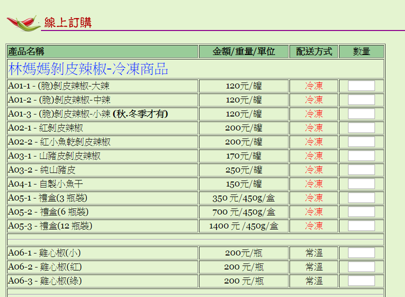
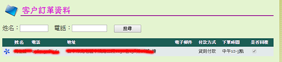
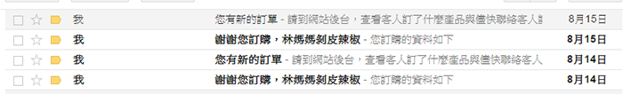
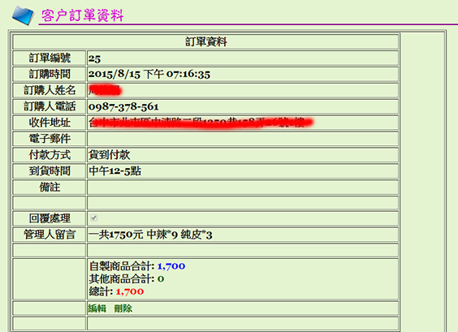
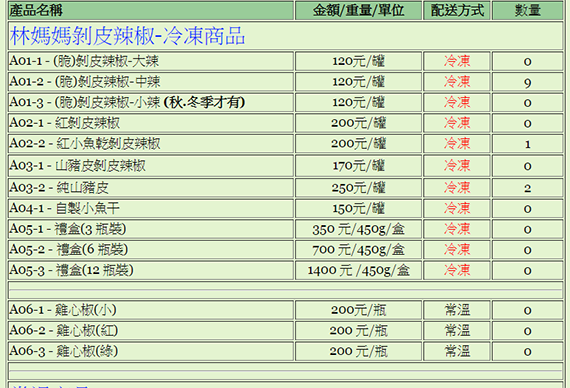
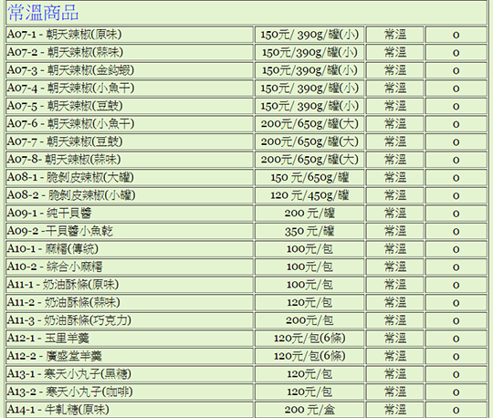
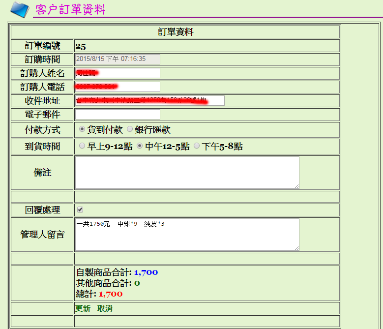
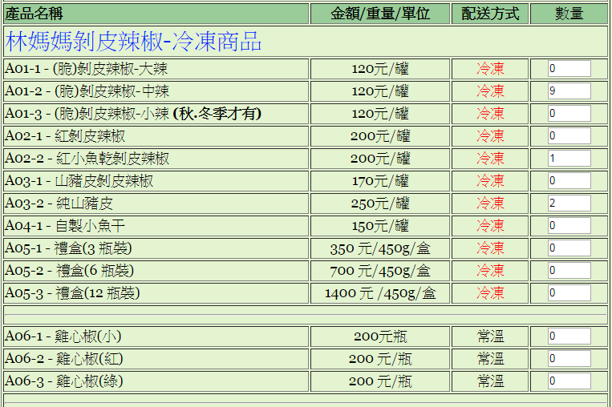
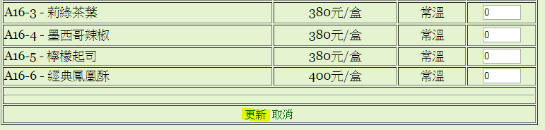

後台使用說明書-客戶訂單
登入操作 | 管理員操作 | 客戶訂單 | 已處理訂單 | 未處理訂單
外網下單
此處的資料呈現的內容，主要是由客戶，從外網下單後，資訊會在被記錄在網站的資料庫內。讓管理老方便的取得訂購人相關的訊息。

客戶訂單列表 - 下單後的清單資訊
只要有客戶從外網下單後，管理老由兩個部份可以得知下單資料。
一、登入後台後，開啟客戶訂單列表
二、電子郵件信箱。(部份資料，如人名、聯絡電話、地址、宅配資料等訊息。
此二處可以留知客戶訂些什麼樣的產品。
客戶訂單列表

電子郵件信箱

訂單詳細內容
點選客戶訂單資料的列表上的『名字』, 即可進入訂單的詳細內容，查看客戶訂了些什麼產品。

訂單基本資料，此訂單系統只有計算產品總金額，並未計算『宅配費用』，所以請於聯絡客戶時，告知客戶宅配的運費費用。請在後台查詢資料處理之後，建議請在管理人員留言中，留下該筆訂單的處理狀況，以備留底未來在查詢資料時，方便查看。
商品訊息

訂單編俢方式
請點選網頁上『編輯』的按鈕，畫面就會進行編輯狀態，方便管理人員調整需要變動資料，包含訂單資料及商口資料皆可以變動。。



修改後，請按『更新』即可完成『更新的動作」。
[回上一頁]